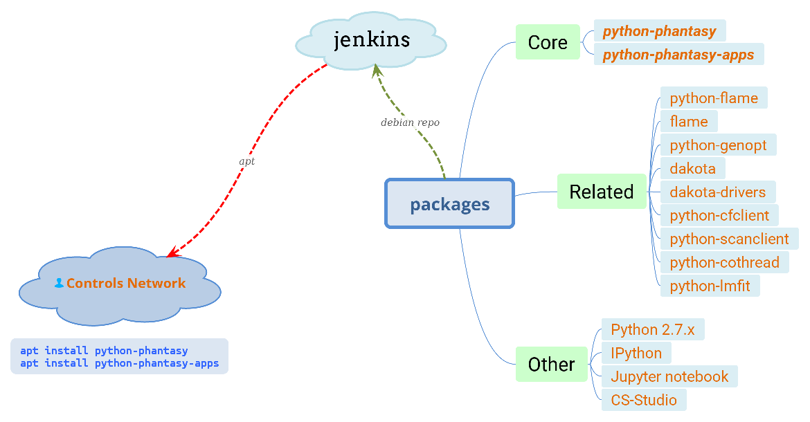

Deployment
Deploy phantasy to different operating systems is quite simple, both
online and offline approaches are provided.
Install via PIP
The wheel packages for phantasy are published on PyPI, to install it: pip install phantasy,
which will also install all of the dependencies. Please note, you may need to install python-dev
package, e.g. libpython3-dev for Debian and its derivatives, or python3-devel for RPM based
distributions.
pip install phantasy
Or upgrade from earlier version by:
pip install phantasy --upgrade [--no-deps]
Install via APT
This is the recommended way to deploy phantasy, however, the APT
way is FRIB intranet only.
The target workstation is running Debian 11, add the
following lines to /etc/apt/sources.list or save as a separated file
to the directory /etc/apt/sources.list.d:
deb http://ci.frib.msu.edu/debian/ uc4 unstable
deb-src http://ci.frib.msu.edu/debian/ uc4 unstable
The public key can be imported by [1]:
wget http://ci.frib.msu.edu/debian/repo_key.gpg -O - | sudo apt-key add -
After that, in the terminal, issue sudo apt-get update and
sudo apt-get install python3-phantasy to install phantasy, apt will
handle all the dependencies automatically.
FRIB controls network case
{kind=link}
Run Tests
After installation, executing the command test_phantasy to run
the tests distributed with phantasy package.
Alternative way to do in Python terminal:
>>> from phantasy.tests import main
>>> main()
Footnotes